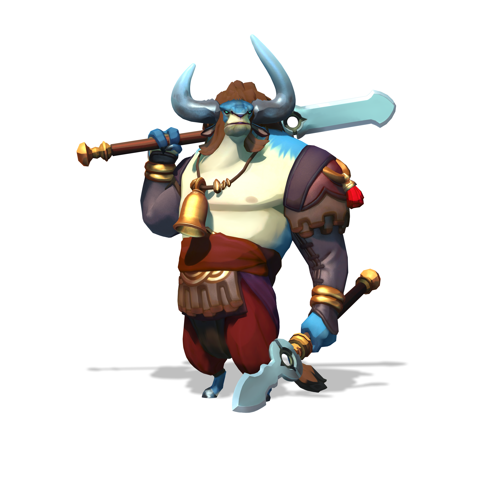

Scroll down to find out more about Lord Knossos!

A brief summary on Lord Knossos:
- Lord Knossos is the king of melee, and is an easy to understand character, as wells as a high DPS output.
- Lord Knossos, as you would expect, is an honorable soul that weilds a spear, and likes to fight one on one.
- His damage output is huge, especially in terms of basic attacks, and his abilities, as you can imagine, only make it higher.
- His main ability is "Skewer" and does around a 100 damage, but this can easily be increased by upgrades that can 'crack' armor, or make enemies 'bleed'.
- If his prey is escaping he can quickly shoot them don with his "Chuck" ability that, as you would expect, chucks his spear at the enemy.
- "Chuck" can be upgraded to do an increased damage, or can 'slow' enemies down as well as 'cripple' them.
- "Gore" is an ability that is a full on meele charge that interrupts attackers on hit.
- You can upgrade "Gore" to 'launch' enemies, or to perform a powerful second attack that points his spear upward at the enemy.
- He's super flexible, getting in and out of conflict rather easily, and can escape attackers, or rush to his allies using his "Bull Rush" ability.
- "Bull Rush" allows increased movement speed for five seconds and can cleanse you from debuffs if upgraded, that way.
- A group of agile enemies can control his motions, and while he'll likely survive the bulk of such encounters, he can easily be kited around the arena if you're not paying attention.
- Lord Knossos can be used to get in and out of dangerous and life-threatening situations, but it is not recomended to sneak up behind enemy lines with him unless you are a pro...
- Lord Knossos is a really unique character, and should not be grouped up as 'just another character'.
- As you may already have figured out each and every character is unique in their own different way, and Lord Knossos no less.
- At the battle's end, they offered Knossos the high lord's mantle, but he refused. “You honor me, and you honor the lineage that flows through my veins,” he said. “But I cannot lead. I am not ready for the tribe, and the tribe is not ready for me.”
Links
We'll see you on the airship!!